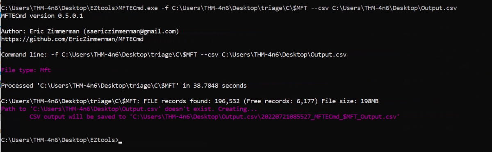

The NTFS File System
The NTFS file system
As observed in the previous task, the FAT file system is a very basic file system. It does the job when it comes to organizing our data, but it offers little more in terms of security, reliability, and recovery capabilities. It also has certain limitations when it comes to file and volume sizes. Hence, Microsoft developed a newer file system called the New Technology File System (NTFS) to add these features. This file system was introduced in 1993 with the Windows NT 3.1. However, it became mainstream since Windows XP. The NTFS file system resolves many issues present in the FAT file system and introduces a lot of new features. We will discuss some of the features below.
Journaling
The NTFS file system keeps a log of changes to the metadata in the volume. This feature helps the system recover from a crash or data movement due to defragmentation. This log is stored in $LOGFILE in the volume's root directory. Hence the NTFS file system is called a journaling file system.
Access Controls
The FAT file system did not have access controls based on the user. The NTFS file system has access controls that define the owner of a file/directory and permissions for each user.
Volume Shadow Copy
The NTFS file system keeps track of changes made to a file using a feature called Volume Shadow Copies. Using this feature, a user can restore previous file versions for recovery or system restore. In recent ransomware attacks, ransomware actors have been noted to delete the shadow copies on a victim's file systems to prevent them from recovering their data.
Alternate Data Streams
A file is a stream of data organized in a file system. Alternate data streams (ADS) is a feature in NTFS that allows files to have multiple streams of data stored in a single file. Internet Explorer and other browsers use Alternate Data Streams to identify files downloaded from the internet (using the ADS Zone Identifier). Malware has also been observed to hide their code in ADS.
Master File Table
Like the File Allocation Table, there is a Master File Table in NTFS. However, the Master File Table, or MFT, is much more extensive than the File Allocation Table. It is a structured database that tracks the objects stored in a volume. Therefore, we can say that the NTFS file system data is organized in the Master File Table. From a forensics point of view, the following are some of the critical files in the MFT:
$MFT
The $MFT is the first record in the volume. The Volume Boot Record (VBR) points to the cluster where it is located. $MFT stores information about the clusters where all other objects present on the volume are located. This file contains a directory of all the files present on the volume.
$LOGFILE
The $LOGFILE stores the transactional logging of the file system. It helps maintain the integrity of the file system in the event of a crash.
$UsnJrnl
It stands for the Update Sequence Number (USN) Journal. It is present in the $Extend record. It contains information about all the files that were changed in the file system and the reason for the change. It is also called the change journal.
MFT Explorer
MFT Explorer is one of Eric Zimmerman's tools used to explore MFT files. It is available in both command line and GUI versions. We will be using the CLI version for this task.
MFTECmd parses data from the different files created by the NTFS file system like $MFT, $Boot, etc. The above screenshot shows the available options for parsing MFT files. For parsing the $MFT file, we can use the following command:
MFTECmd.exe -f <path-to-$MFT-file> --csv <path-to-save-results-in-csv>
You can then use the EZviewer tool inside the EZtools folder to view the output of MFTECmd, or to view CSV files in the next tasks as well. You will see that it lists information about all the files present on the volume. You can similarly parse the $Boot file, which will provide information about the boot sector of the volume. MFTECmd doesn't support $LOGFILE as of now.
Example:
